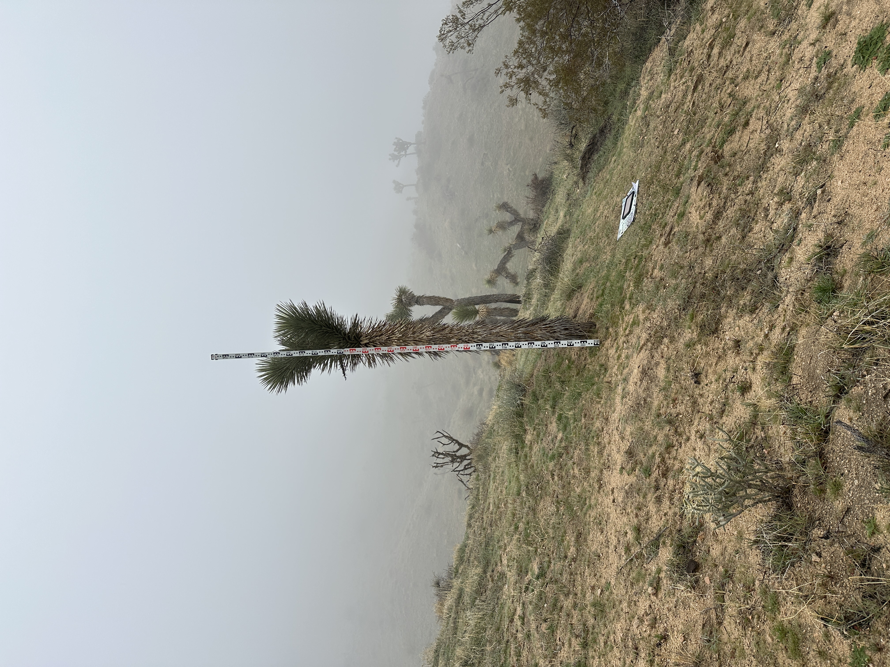
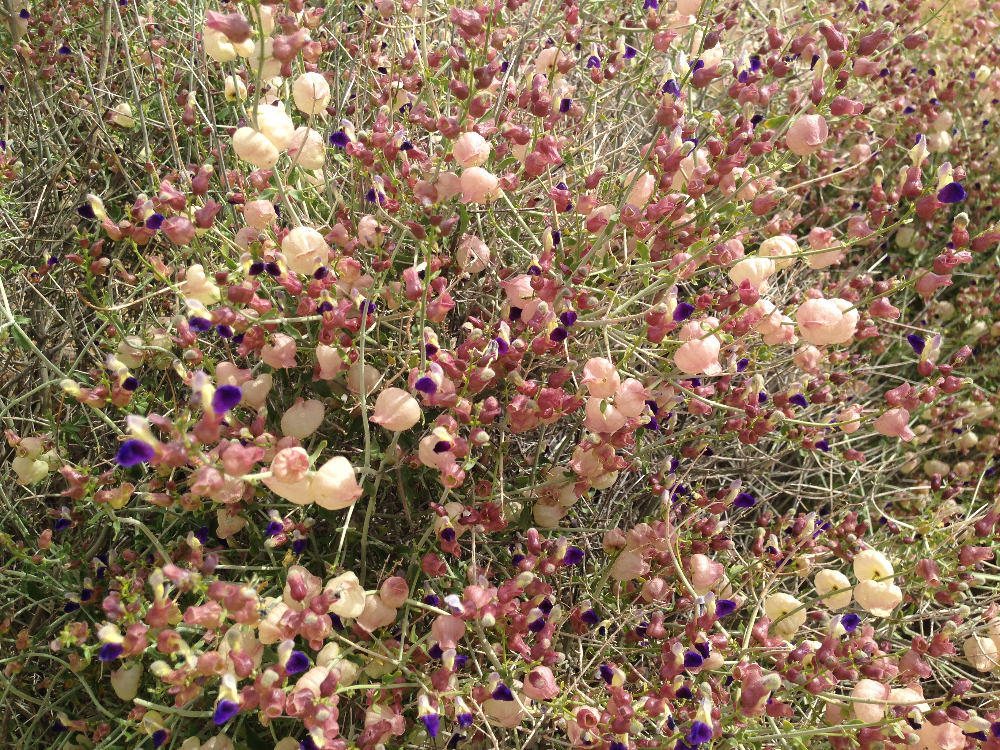

Joshua tree surveys & reporting
Western Joshua tree inventories, GPS mapping, and reporting to support project planning and permit applications, with a focus on Southern California’s deserts.
What an inventory includesCalifornia
Tree surveys, reporting, and landscape design for property owners and project teams.
Services
Western Joshua tree inventories, GPS mapping, and reporting to support project planning and permit applications, with a focus on Southern California’s deserts.
What an inventory includesReview of proposed improvements in relation to existing trees, with guidance on potential conflicts and opportunities to avoid or reduce impacts.
Site visits to review tree health, visible concerns, and growing conditions. Recommendations for care and referrals to appropriate service providers when work is needed.
Landscape and planting design for new and existing landscapes, informed by site conditions, architecture, and how a space will be used. Services include design consultation, concept development, and planting plans, from targeted improvements to a broader landscape plan.
Work can span a range of landscape types, with particular expertise in California landscapes and Southwest desert plant communities. Design services are available throughout California; Southwest desert projects are considered individually.
Planning for the restoration of native landscapes, including site assessment, species selection, planting strategies, and guidance for establishment and ongoing care.
Workshops and field-based instruction on tree survey methods, ecological design, California native plants, and related topics. Content can be tailored to the audience and setting.
What an inventory typically includes.
We review available plans and identify where project activities may occur: building footprints and additions, grading, utility trenches, septic systems, driveways, equipment access, and material staging.
The inventory covers these areas plus a surrounding 50-foot survey buffer.
A field visit records living and dead western Joshua trees within the survey area, including measurements, GPS locations, and photographic documentation.
The findings are compiled into an inventory table, map, and written report documenting trees in relation to the proposed work.
The inventory forms part of the project’s permit application. The California Department of Fish and Wildlife reviews each project individually, evaluates potential tree impacts, and calculates applicable mitigation fees using its established fee schedule.
Changes to the proposed work area may require updates to the inventory and mapping. The survey buffer identifies trees to document; inclusion in the inventory does not automatically mean a mitigation fee applies.
CDFW census guidance
Marinna Wagner is an ISA Certified Arborist whose practice combines tree reporting, landscape design, and restoration planning. Her tree inventory and reporting work focuses on western Joshua trees and projects in Southern California’s deserts.
Her horticultural experience spans California native plants, specimen trees, and Mediterranean and Australian species. Her background also includes work at the Mojave Desert Land Trust restoration nursery.
She received a master’s degree in landscape architecture from Cal Poly Pomona in 2018 and an ASLA student award for her research in Joshua Tree National Park.
Email is the best place to start. Send your property address or parcel number, a brief project description, and any available plans.
mwarborist@gmail.comTree reporting: Southern California deserts.
Landscape design: California statewide; Southwest desert projects by inquiry.